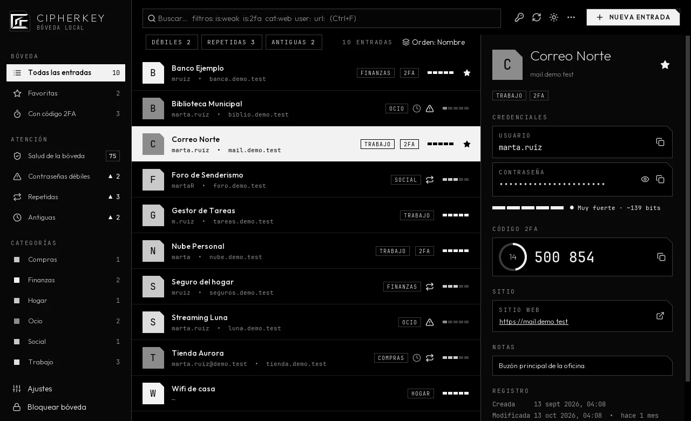
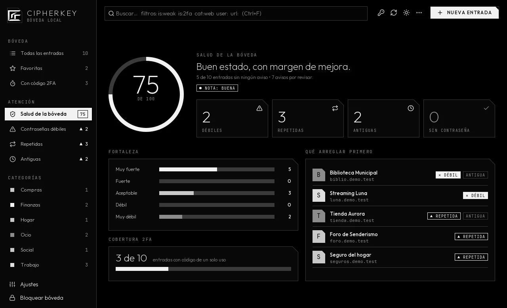
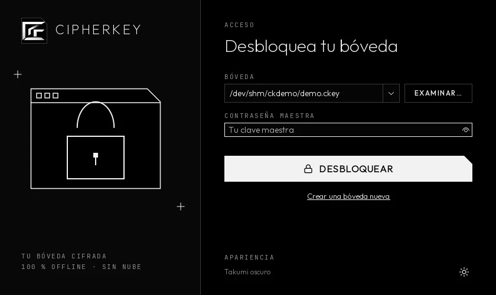

Gestor de contraseñas · 4.2.0
La bóveda de contraseñas que vive en tu equipo.
Cifrado local, sin cuentas ni servidores. Tú tienes el fichero y tú tienes la clave.

01 · Funciones
Todo el ciclo de la contraseña, en local.
- 01
Custodiar
Un único archivo
.ckeycon AES-256-GCM, guardado atómico y copia.bak. - 02
Organizar
Categorías, favoritas y búsqueda instantánea por nombre, usuario, sitio o notas.
- 03
Generar
De 8 a 64 caracteres, sin caracteres ambiguos si quieres, con medidor de fuerza.
- 04
Proteger
Bloqueo por inactividad y portapapeles que se vacía solo a los 30 s.
- 05
Auditar
Salud de la bóveda: contraseñas débiles, repetidas, antiguas o vacías.
- 06
Interoperar
Códigos 2FA (TOTP), importación y exportación CSV y copia de seguridad cifrada.
Pensada para quien quiere control. Sincroniza por la red local, sin servidor, entre tus propios dispositivos; no hay autorrelleno en el navegador ni sincronización en la nube.
02 · Pruébalo
El generador, sin salir de la página.
Funciona con crypto.getRandomValues en tu navegador. Nada se envía ni se guarda.
——
03 · Seguridad
De tu clave maestra a un único fichero cifrado.
Formato documentado y código abierto: cualquiera puede comprobar qué ocurre con tus datos.
- Clave maestra
Solo en tu cabeza.
- Argon2id
64 MiB, 3 iteraciones: deriva la clave de cifrado.
- AES-256-GCM
Cifra y autentica, cabecera incluida.
- Fichero .ckey
Guardado atómico con copia
.bak.
- 1
- Fichero cifrado
- 0
- Cuentas ni servidores
- 256
- Bits AES-GCM
04 · Capturas
Takumi oscuro y Takumi papel.
Capturas reales de la aplicación con una bóveda de demostración de datos inventados.


05 · Descargar
Descárgala. Tus datos son tuyos.
Cada versión publicada incluye un JAR ejecutable (Java 25) y los paquetes que se hayan generado para ella, con su suma SHA-256.
Licencia MIT · sin cuenta · sin suscripción
java -jar cipherkey-4.2.0.jar